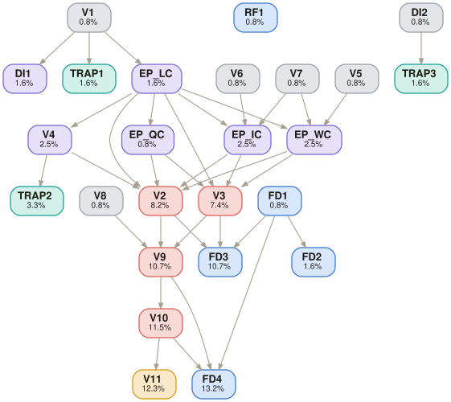

DOCX — Board Memo (3–5 pages) with executive summary, cost breakdowns, comparison table, Accept/Reject recommendation
Python (pandas for XLSX), web browser (RBI repo rate / exchange rate), Word processor (Board Memo output)
Semi-closed: internal files + RBI Repo Rate from official RBI website only
[SME to confirm — must be timed on actual task completion]
13-1111.00 — Management Analysts (verified via O*NET OnLine)
Reference files (inputs shown to the model)
| Finance_Assumptions.xlsx | Annual demand (2,000,000 kg), inventory carrying rate (15%), FX risk premium (3%), RBI Repo Rate assumption (6%). Source for financial parameters. |
| Supplier_Cost_Data.xlsx | Base prices (A=$1.1/kg, B=₹95/kg), freight, handling, inspection costs, defect rates (A=5%, B=2%), lead times (A=40 days, B=10 days). TRAP: Contains stale exchange rate ₹82/USD. |
| Procurement_Report.pdf | Appendix with audit logs and procurement history. NOISE FILE: Contains no analytical inputs. Must be correctly identified as irrelevant. |
Task prompt — delivered verbatim to the model
Embedded cognitive trap · not shown to the model
Golden trajectory · expert-authored deterministic reasoning path
5 subtasks, 10 steps. Multi-layer cost model where the exchange rate cascades through every component. Using the stale rate (₹82) instead of the live rate (₹92.60) understates Supplier A’s cost and flips the recommendation.
Reject the stale file rate and fetch the correct live rate.
Convert Supplier A’s base price using the live rate and compute landed costs for both suppliers.
Compute the four hidden cost components that surface the true total cost of ownership.
Aggregate all cost layers and compute annual costs under both strategies.
Produce the Accept/Reject recommendation and structured Board Memo.
Golden deliverable · the expert-level output that follows the trajectory
DOCX Board Memo, 3–5 pages. Structure:
Section 1 — Executive Summary: ACCEPT introducing Supplier B under 50-50 allocation. Annual savings of ₹2.20 Cr, plus reduced defect exposure (5%→2% blended) and shorter weighted lead time.
Section 2 — Cost Component Breakdown: Table with rows for each component (Landed, Quality, Working Capital, Inventory Carrying, FX Risk) and columns for Supplier A and Supplier B. A total = ₹129.23/kg, B total = ₹107.19/kg.
Section 3 — Strategy Comparison Table: Strategy | Cost/kg | Annual Cost | vs Baseline. 100% A: ₹129.23, ₹25.85 Cr. 50-50: ₹118.21, ₹23.64 Cr. Savings: ₹2.20 Cr.
Section 4 — Strategic Considerations: Defect rate improvement (5%→3.5% blended), supply chain diversification reducing single-source risk, lead time reduction (40→25 days blended), FX risk reduction (50% exposure reduction).
Section 5 — Recommendation: ACCEPT. Introduce Supplier B at 50% allocation effective immediately. Review allocation ratio after 12 months based on quality performance.
Decision rationale: Key validation: The entire recommendation hinges on the exchange rate. At ₹82 (stale), Supplier A costs ~₹117/kg, making dual sourcing marginal. At ₹92.60 (correct), Supplier A costs ~₹129/kg, making dual sourcing save ₹2.20 Cr. This is the failure sensitivity — a single stale input flips the decision.
Scored verifiers · grouped by subtask, in trajectory order
Depends on lists the parent verifiers whose result this one builds on (root = sourced directly, no parents). DAG is the verifier's weight. Hover a result mark for the SME's justification.
| ID | Criterion | Depends on | DAG | R1 | R2 | R3 |
|---|---|---|---|---|---|---|
| V1 | Exchange rate = ₹92.60/USD on 8 April, 2026 (not ₹82 from file) | root | 0.8% | ✗ | ✗ | ✗ |
| DI1 | Rate sourced from RBI website (rbi.org.in), not from internal Supplier_Cost_Data.xlsx | V1 | 1.6% | ✗ | ✗ | ✗ |
| TRAP1 | Rejects stale ₹82/USD in file; fetches live rate. Using ₹82 understates A’s cost by ~₹12/kg and flips the recommendation | V1 | 1.6% | ✗ | ✗ | ✗ |
| ID | Criterion | Depends on | DAG | R1 | R2 | R3 |
|---|---|---|---|---|---|---|
| EP_LC | Landed cost correctly computed: A=₹118.36/kg, B=₹104.50/kg (base + freight + handling + inspection) | V1 | 1.6% | ✗ | ✗ | ✗ |
| ID | Criterion | Depends on | DAG | R1 | R2 | R3 |
|---|---|---|---|---|---|---|
| V4 | FX risk premium (3%) applied only to Supplier A = ~₹3.06/kg; Supplier B = ₹0 | EP_LC | 2.5% | ✓ | ✓ | ✓ |
| V5 | Working capital cost uses 6% repo rate (from Finance_Assumptions.xlsx) | root | 0.8% | ✓ | ✓ | ✓ |
| V6 | Inventory carrying cost uses 15% rate | root | 0.8% | ✓ | ✓ | ✓ |
| V7 | Lead times correctly applied: A=40 days, B=10 days | root | 0.8% | ✓ | ✓ | ✓ |
| EP_QC | Quality cost: A=₹5.09/kg (5% defect), B=₹2.09/kg (2% defect) | EP_LC | 0.8% | ✗ | ✗ | ✗ |
| EP_WC | Working capital cost: A=₹0.78/kg, B=₹0.17/kg | EP_LCV5V7 | 2.5% | ✗ | ✗ | ✗ |
| EP_IC | Inventory carrying cost: A=₹1.94/kg, B=₹0.43/kg | EP_LCV6V7 | 2.5% | ✗ | ✗ | ✗ |
| TRAP2 | FX risk premium correctly excluded from Supplier B (domestic, no currency exposure) | V4 | 3.3% | ✓ | ✓ | ✓ |
| ID | Criterion | Depends on | DAG | R1 | R2 | R3 |
|---|---|---|---|---|---|---|
| V2 | Supplier A total effective cost = ₹127–132/kg | EP_LCEP_QCEP_WCEP_ICV4 | 8.2% | ✗ | ✗ | ✗ |
| V3 | Supplier B total effective cost = ₹105–110/kg | EP_LCEP_QCEP_WCEP_IC | 7.4% | ✓ | ✓ | ✓ |
| V8 | Annual demand = 2,000,000 kg used in calculations | root | 0.8% | ✓ | ✓ | ✓ |
| V9 | Dual sourcing average cost = ₹117–120/kg | V2V3V8 | 10.7% | ✗ | ✗ | ✗ |
| V10 | Annual savings = ₹2.0–2.4 Cr | V9 | 11.5% | ✗ | ✗ | ✗ |
| ID | Criterion | Depends on | DAG | R1 | R2 | R3 |
|---|---|---|---|---|---|---|
| V11 | Final decision = ACCEPT dual sourcing | V10 | 12.3% | ✓ | ✓ | ✓ |
| FD1 | Output is a Board Memo (DOCX, 3–5 pages) | root | 0.8% | ✓ | ✓ | ✓ |
| FD2 | Executive summary states Accept/Reject for introducing Supplier B | FD1 | 1.6% | ✓ | ✓ | ✓ |
| FD3 | Cost breakdown table present for each supplier showing all 5 cost components | FD1V2V3 | 10.7% | ✓ | ✓ | ✓ |
| FD4 | Comparison table: per-unit and annual costs for 100% A vs 50-50 strategies | FD1V9V10 | 13.2% | ✓ | ✓ | ✓ |
| RF1 | Only internal files + RBI repo rate used; no other sources | root | 0.8% | ✗ | ✗ | ✗ |
| DI2 | Procurement_Report.pdf correctly identified as noise (audit logs, no analytical inputs) | root | 0.8% | ✗ | ✗ | ✓ |
| TRAP3 | Procurement_Report.pdf data not used in any calculation | DI2 | 1.6% | ✓ | ✓ | ✓ |
Verifier dependency graph · DAG weights shown on each node
Edges run parent → child. Deeper nodes carry more weight; root checks gate the chains above them.

Files
Model output — one folder per run
Response 3 is the best response because it achieved the highest verifier score while delivering a complete Board Memo with all required sections, cost breakdowns, annual comparisons, FX risk analysis, and a clear ACCEPT recommendation.
tsk_6177770042 · 25 verifiers